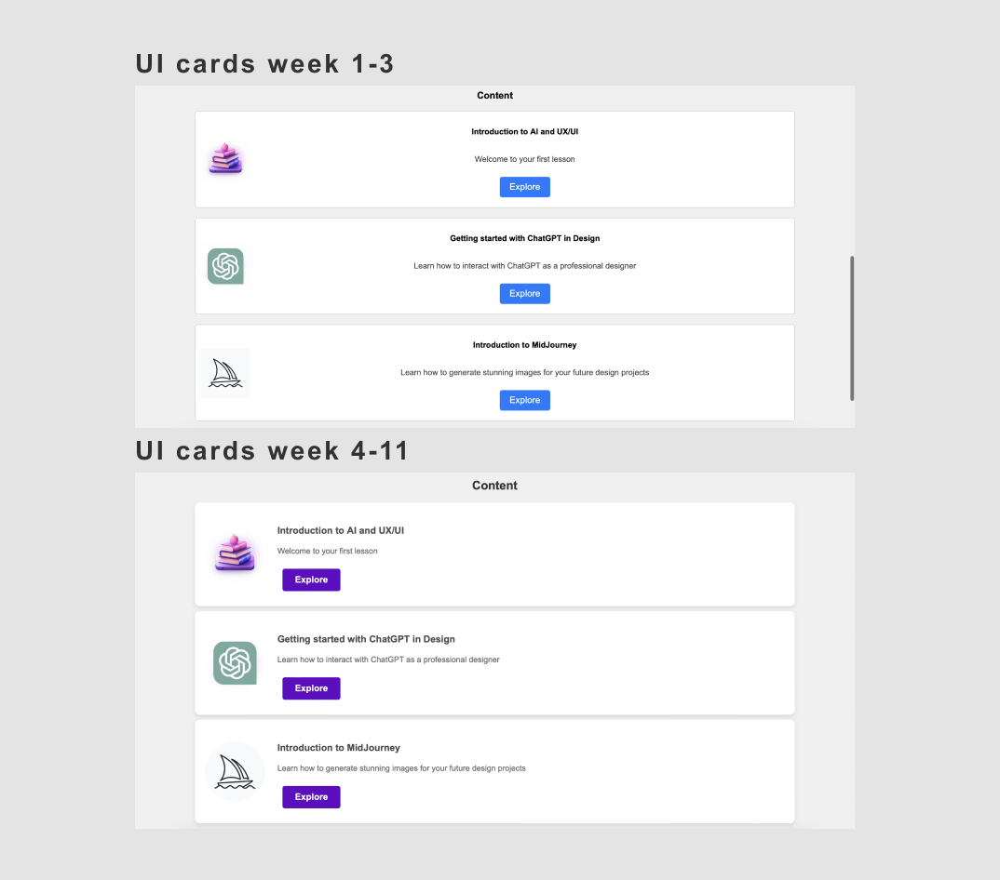

Based on the mood board and the wireframe I created during the first 3 weeks I had an idea of how my final design should look. Although I had some previous knowledge of CSS, I decided to go through some of the tutorials on W3Schools. I find them quite helpful for both beginners and people who need to develop their CSS skills.
After reviewing the CSS structure I took the W3schools CSS quiz and the W3Schools CSS exercises, I moved on to the actual lab task for this week - to create my external CSS sheet.
This task has helped me enhance the overall design of my website, and I am proud to share my greatest achievement so far:
Since the first version of the portfolio website project (week 1-3) was still small, its CSS was included directly within the HTML file. However, I have now separated these, and the CSS sheet I have created, mystyle.css, is linked to my HTML file. I did the same for my separate pages' css sheets.
I have specified the colour palettes, and font families, and thought of a specific layout during the first three weeks of the course. I’ve decided to work with colours that are balanced enough in terms of contrast so that the content is easily accessible. The font I have chosen is Arial - an easily readable font. Another important feature was responsiveness. After looking through some tutorials I believe that I managed to create a website that is not only visually appealing but is also responsive, and people can access it through different screen size devices.